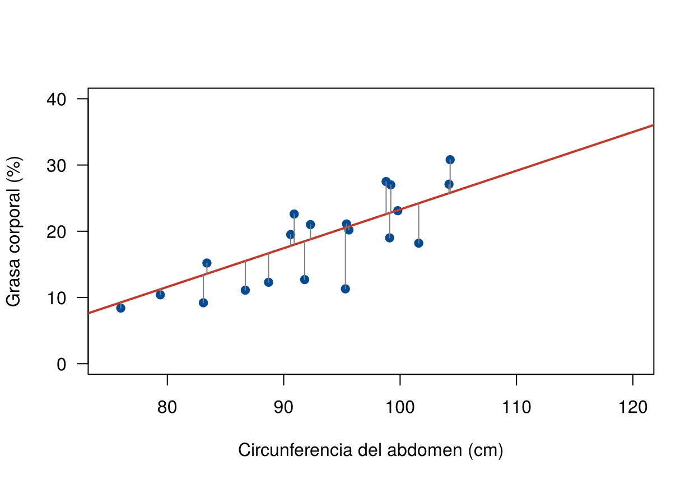
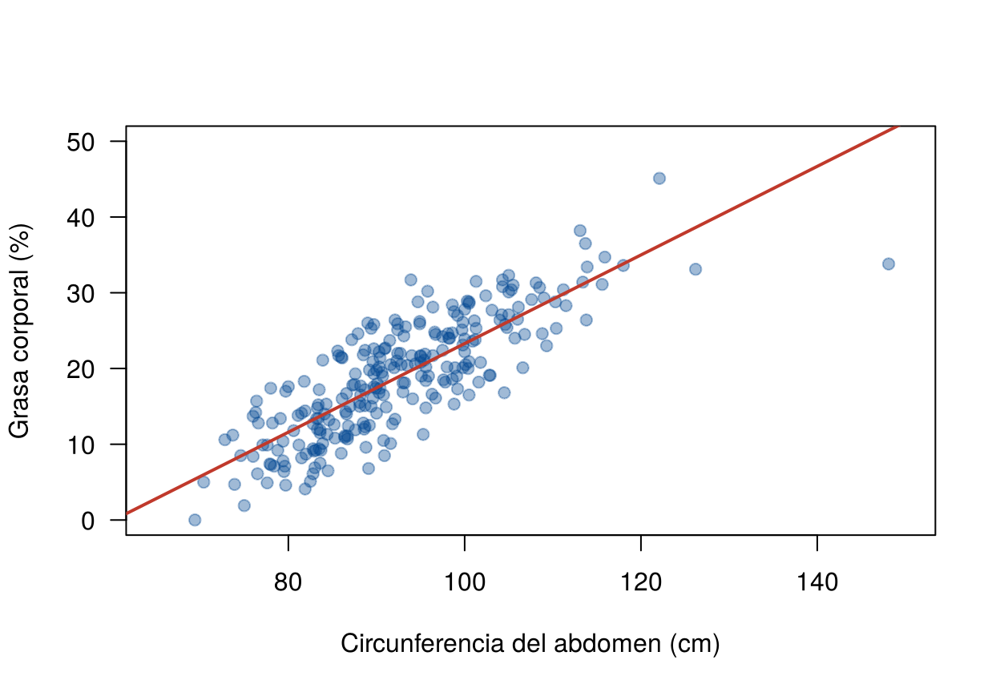

El modelo \(y_i = \beta_0 + \beta_1 x_i + \varepsilon_i\) tiene tres parámetros desconocidos: \(\beta_0\), \(\beta_1\) y \(\sigma^2\). Por una nube de puntos pasan infinitas rectas. ¿Cuál es la que mejor representa los datos?
Esta página presenta el método de mínimos cuadrados
ordinarios (MCO), que es el que usa la función
lm() de R, la estimación de \(\sigma^2\) y el método de máxima
verosimilitud, visto en la Unidad 2. Los bloques de código se
ejecutan en orden.
Para una recta cualquiera \(b_0 + b_1 x\), el valor ajustado de la observación \(i\) es \(\hat{y}_i = b_0 + b_1 x_i\), y el residual es la distancia vertical entre el dato y la recta:
\[ e_i = y_i - \hat{y}_i \]
Un residual positivo indica que el dato está por encima de la recta; uno negativo, por debajo. El residual \(e_i\) es la versión observable del error \(\varepsilon_i\), que no se puede ver porque depende de los parámetros desconocidos.
Los datos se descargan aquí:
grasa.csv. Guarde el archivo en la
carpeta data de su proyecto de
RStudio.
grasa <- read.csv("data/grasa.csv")
modelo <- lm(grasa ~ abdomen, data = grasa)
set.seed(2026)
muestra <- grasa[sample(nrow(grasa), 20), ]
plot(grasa ~ abdomen, data = muestra, pch = 19, col = "#034A94", las = 1,
xlab = "Circunferencia del abdomen (cm)", ylab = "Grasa corporal (%)",
xlim = c(75, 120), ylim = c(0, 40))
abline(modelo, col = "#C0392B", lwd = 2)
segments(muestra$abdomen, muestra$grasa, muestra$abdomen, fitted(modelo)[as.character(muestra$id)],
col = "gray50")
Residuales de 20 hombres elegidos al azar respecto a la recta de mínimos cuadrados.
El método de mínimos cuadrados ordinarios elige la recta que hace más pequeña la suma de los residuales al cuadrado:
\[ SCE(b_0, b_1) = \sum_{i=1}^{n} (y_i - b_0 - b_1 x_i)^2 \]
Se elevan al cuadrado para que los residuales positivos y negativos no se cancelen y para penalizar más las distancias grandes. Los valores que minimizan esta suma son:
\[ \hat{\beta}_1 = \frac{\sum (x_i - \bar{x})(y_i - \bar{y})}{\sum (x_i - \bar{x})^2} = \frac{S_{xy}}{S_{xx}}, \qquad \hat{\beta}_0 = \bar{y} - \hat{\beta}_1 \bar{x} \]
Estas fórmulas salen de derivar la suma con respecto a \(b_0\) y \(b_1\) e igualar a cero (las ecuaciones normales). En el recuadro del final de la página está la deducción, para quien quiera verla.
Se pueden calcular a mano en R:
x <- grasa$abdomen
y <- grasa$grasa
Sxy <- sum((x - mean(x)) * (y - mean(y)))
Sxx <- sum((x - mean(x))^2)
b1 <- Sxy / Sxx
b0 <- mean(y) - b1 * mean(x)
c(b0 = b0, b1 = b1) b0 b1
-35.1966077 0.5848905 La función lm() (linear model) hace lo mismo.
Su primer argumento es una fórmula:
respuesta ~ explicativa.
modelo <- lm(grasa ~ abdomen, data = grasa)
coef(modelo)(Intercept) abdomen
-35.1966077 0.5848905 La recta estimada es
\[ \widehat{\text{grasa}} = -35.2 + 0.585 \times \text{abdomen} \]
plot(grasa ~ abdomen, data = grasa, pch = 19, col = "#034A9460", las = 1,
xlab = "Circunferencia del abdomen (cm)", ylab = "Grasa corporal (%)",
xlim = c(65, 150), ylim = c(0, 50))
abline(modelo, col = "#C0392B", lwd = 2)
Recta de mínimos cuadrados para la grasa corporal según el abdomen.
lm()?La función lm() ajusta modelos de regresión lineal
simple y múltiple. Su estructura general es:
lm(formula, data, subset, weights, na.action,
method = "qr", model = TRUE, x = FALSE, y = FALSE, qr = TRUE,
singular.ok = TRUE, contrasts = NULL, offset, ...)En la práctica se usan pocos argumentos:
| Argumento | Para qué sirve | Ejemplo |
|---|---|---|
formula |
La relación entre la respuesta y las variables
explicativas, con la sintaxis respuesta ~ explicativa |
grasa ~ abdomen |
data |
La tabla (data.frame) donde están las
variables de la fórmula |
data = grasa |
subset |
Ajustar el modelo con una parte de las filas | subset = id != 182 |
weights |
Pesos para mínimos cuadrados ponderados | weights = w (Varianza no constante) |
na.action |
Qué hacer con los datos faltantes; por defecto se
omiten las filas con NA |
na.action = na.omit |
En la fórmula, ~ se lee “según” o “en función de”.
Algunas variantes útiles:
| Fórmula | Modelo |
|---|---|
y ~ x |
\(y = \beta_0 + \beta_1 x + \varepsilon\) |
y ~ x - 1 |
Recta sin intercepto, \(y = \beta_1 x + \varepsilon\) |
log(y) ~ log(x) |
Recta entre los logaritmos (Transformaciones) |
y ~ x + I(x^2) |
Término cuadrático; I() hace que
^ se calcule como potencia |
lm() devuelve un objeto con el modelo ajustado. Sobre
ese objeto se aplican otras funciones:
| Función | Qué devuelve |
|---|---|
coef(modelo) |
Los coeficientes estimados |
summary(modelo) |
La tabla de coeficientes, pruebas, \(\hat{\sigma}\) y \(R^2\) |
fitted(modelo) |
Los valores ajustados \(\hat{y}_i\) |
residuals(modelo) |
Los residuales \(e_i\) |
confint(modelo) |
Intervalos de confianza para los coeficientes |
predict(modelo, newdata) |
Predicciones para valores nuevos de \(x\) |
anova(modelo) |
La tabla de análisis de varianza |
plot(modelo) |
Gráficos de diagnóstico |
subconjunto <- lm(grasa ~ abdomen, data = grasa, subset = id != 182)
coef(subconjunto)(Intercept) abdomen
-34.7694865 0.5805124 Por la forma en que se calcula, la recta de MCO siempre cumple:
sum(residuals(modelo)) # prácticamente cero[1] -0.00000000000000965894coef(modelo)[1] + coef(modelo)[2] * mean(x) # igual a la media de y(Intercept)
18.93849 mean(y)[1] 18.93849cor(x, y) * sd(y) / sd(x) # igual a la pendiente[1] 0.5848905La primera salida no es exactamente cero por el redondeo del computador: un número con tantos ceros después del punto decimal es cero para efectos prácticos.
El tercer parámetro, \(\sigma^2\), mide qué tan dispersos están los datos alrededor de la recta de la población. Se estima con los residuales:
\[ \hat{\sigma}^2 = \frac{SCE}{n - 2} = \frac{\sum e_i^2}{n - 2} \]
Se divide por \(n - 2\) y no por \(n\) porque se estimaron dos parámetros (\(\beta_0\) y \(\beta_1\)) antes de calcular los residuales. Con esa división, \(\hat{\sigma}^2\) es insesgado. Es la misma idea de dividir por \(n - 1\) en la varianza muestral de la Unidad 2, donde se estimaba un parámetro (la media).
SCE <- sum(residuals(modelo)^2)
n <- nrow(grasa)
sigma2 <- SCE / (n - 2)
c(SCE = SCE, sigma2 = sigma2, sigma = sqrt(sigma2)) SCE sigma2 sigma
5094.931083 20.379724 4.514391 sigma(modelo) # la misma estimación de sigma[1] 4.514391\(\hat{\sigma} = 4.51\) puntos porcentuales es la desviación estándar residual: la distancia típica entre la grasa de un hombre y la recta. Como la grasa va de 0 a 45 %, un error típico de 4.5 puntos indica que la recta da una idea útil, pero no exacta, de la grasa de una persona.
Si se supone que los errores son normales, se puede usar el método de máxima verosimilitud visto en la Unidad 2 (Métodos de estimación): se eligen los valores de los parámetros que hacen más probable (más verosímil) haber observado los datos.
El resultado:
c(MCO = SCE / (n - 2), MV = SCE / n) MCO MV
20.37972 20.21798 logLik(modelo) # logaritmo de la verosimilitud máxima'log Lik.' -736.4006 (df=3)logLik() da el valor máximo del logaritmo de la
verosimilitud. Por sí solo no se interpreta; sirve para comparar
modelos, por ejemplo con el criterio AIC.
summary()?summary() reúne todo lo que se usa en las páginas
siguientes:
summary(modelo)
Call:
lm(formula = grasa ~ abdomen, data = grasa)
Residuals:
Min 1Q Median 3Q Max
-17.6257 -3.4672 0.0111 3.1415 11.9754
Coefficients:
Estimate Std. Error t value Pr(>|t|)
(Intercept) -35.19661 2.46229 -14.29 <0.0000000000000002 ***
abdomen 0.58489 0.02643 22.13 <0.0000000000000002 ***
---
Signif. codes: 0 '***' 0.001 '**' 0.01 '*' 0.05 '.' 0.1 ' ' 1
Residual standard error: 4.514 on 250 degrees of freedom
Multiple R-squared: 0.6621, Adjusted R-squared: 0.6608
F-statistic: 489.9 on 1 and 250 DF, p-value: < 0.00000000000000022| Parte de la salida | Qué es | Dónde se explica |
|---|---|---|
Residuals |
Resumen de los cinco números de los residuales | Esta página |
Estimate |
\(\hat{\beta}_0\) y \(\hat{\beta}_1\) | Esta página |
Std. Error |
Error estándar de cada estimador | Propiedades de los estimadores |
t value, Pr(>|t|) |
Prueba de que cada coeficiente es cero | Pruebas, intervalos y R² |
Residual standard error |
\(\hat{\sigma}\) y sus grados de libertad, \(n - 2\) | Esta página |
Multiple R-squared,
F-statistic |
Coeficiente de determinación y prueba F | Pruebas, intervalos y R² |
Para minimizar \(SCE(b_0, b_1) = \sum (y_i - b_0 - b_1 x_i)^2\) se deriva con respecto a cada coeficiente y se iguala a cero:
\[ \frac{\partial SCE}{\partial b_0} = -2 \sum (y_i - b_0 - b_1 x_i) = 0, \qquad \frac{\partial SCE}{\partial b_1} = -2 \sum x_i (y_i - b_0 - b_1 x_i) = 0 \]
La primera ecuación dice que los residuales suman cero, y de ella sale \(b_0 = \bar{y} - b_1 \bar{x}\). Al reemplazar en la segunda se obtiene \(b_1 = S_{xy}/S_{xx}\).
En forma de matrices, con \(\mathbf{y}\) el vector de respuestas y \(\mathbf{X}\) la matriz con una columna de unos y una columna con los \(x_i\), las ecuaciones normales son \(\mathbf{X}^\top \mathbf{X} \, \mathbf{b} = \mathbf{X}^\top \mathbf{y}\), y su solución es \(\hat{\boldsymbol{\beta}} = (\mathbf{X}^\top \mathbf{X})^{-1} \mathbf{X}^\top \mathbf{y}\). Esta forma se usa en la regresión múltiple.
X <- cbind(1, grasa$abdomen)
solve(t(X) %*% X) %*% t(X) %*% grasa$grasa [,1]
[1,] -35.1966077
[2,] 0.5848905| Problema | Causa | Solución |
|---|---|---|
Escribir lm(abdomen ~ grasa) |
Se invierte el orden de la fórmula | La respuesta va a la izquierda de ~ |
| Calcular \(\hat{\sigma}\) dividiendo por \(n\) o por otro número | Se olvidan los grados de libertad | Dividir por \(n - 2\),
o usar sigma(modelo) |
| Pensar que los residuales son los errores | El residual depende de la recta estimada | El error es teórico; el residual es su estimación |
| Creer que MCO exige normalidad | La normalidad se necesita para las pruebas, no para calcular la recta | MCO solo minimiza una suma de cuadrados |
Calcule la suma de los residuales al cuadrado para la recta \(-30 + 0.55\,x\) y compárela con la de MCO.
sum((grasa$grasa - (-30 + 0.55 * grasa$abdomen))^2)[1] 6105.749sum(residuals(modelo)^2)[1] 5094.931La suma de la recta propuesta es mayor. Ninguna recta da una suma menor que la de MCO.
Ajuste lm(abdomen ~ grasa). ¿Su pendiente es \(1/0.585\)? ¿Por qué?
coef(lm(abdomen ~ grasa, data = grasa))(Intercept) grasa
71.116875 1.132037 1 / coef(modelo)[2] abdomen
1.709722 No. La regresión de \(y\) sobre \(x\) minimiza distancias verticales; la de \(x\) sobre \(y\), distancias horizontales. Son rectas distintas, salvo que la correlación sea 1 o −1. Por eso hay que decidir cuál es la respuesta antes de ajustar.
Ajuste el modelo de la grasa según la circunferencia del pecho. Interprete la pendiente y compare \(\hat{\sigma}\) con el del abdomen. ¿Cuál medida predice mejor la grasa?
modelo_pecho <- lm(grasa ~ pecho, data = grasa)
coef(modelo_pecho)(Intercept) pecho
-46.2163596 0.6462223 c(pecho = sigma(modelo_pecho), abdomen = sigma(modelo)) pecho abdomen
5.524225 4.514391 En promedio, entre hombres cuyo pecho difiere en 1 cm, la grasa difiere en 0.65 puntos. La desviación estándar residual es mayor con el pecho, así que el abdomen predice mejor.
Última revisión: 9 de noviembre de 2026.